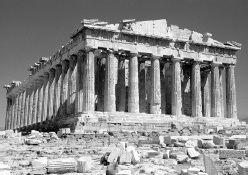

Ünlü devlet adamı Perikles tarafından siparişi verilen Parthenon, Yunanlıların Perslere karşı kazandığı zaferi kutlamak için MÖ 447 ile 432 yılları arasında inşa edilmiştir. Atina Akropolü’nde daha önceki tapınak alanı üzerine yerleştirilmiş, şehrin koruyucu tanrısı Athena Parthenos’a (Bakire Athena) adanmıştır. Bina, bugüne kadar gelebilenler arasında en iyi korunmuş Yunan tapınaklarından biridir.

Antik Yunanlı yazar Plutarch’a göre Parthenon mimar Ictinus ile Callicrates tarafından yapıldı. İçerideki on bir buçuk metre uzunluğundaki heykel, yapının dış bölümündeki birçok heykelin yapılışını da denetleyen klasik dönem heykeltıraşı Phidias tarafından yaratılmıştır.
Antik Yunan tapınakları genelde dikdörtgendir ve yapıya dört tarafından merdivenlerle erişilebilir. Parthenon’da olduğu gibi birçoğunun etrafı sütunlarla çevrilidir. Yunanlılar tapınak inşa ederken Dor, İyon veya Korint olmak üzere üç mimari üsluptan birine bağlı kalıyorlardı. Bu üsluplar değişen oranları ve oymalı başlıklarıyla kolayca ayırt edilebiliyorlardı. Belirli bir üslubun kurallarınca inşa edilen çoğu Yunan tapınağının aksine Parthenon iki üslubu, Dor ve İyon üsluplarını bir araya getirir. Mimarları aynı zamanda optik düzeltmelerden de faydalanmıştır; yani, yapının görünüşünü daha güzel bir hale getirmek için biçimini hafifçe bozmuşlardır. Örneğin, binanın zemini ve tavan hattına yukarı doğru yumuşak bir kavis verilmiştir, çünkü bu kısımlar dümdüz olsalardı çıplak gözle bakıldığında çökük gibi görüneceklerdi. Benzer şekilde, sütunların da alt kısımları üste nazaran kalın tutulmuş, böylelikle aşağıdan bakanların sütunları daha uzun olarak algılaması sağlanmıştır.
Başlangıçta Parthenon’un ahşap bir tavanıyla kiremit örtülü bir çatısı vardı ve parlak renklerle boyanmıştı. Sütunların üzerinde tapınağı baştanbaşa saran kare rölyefler veya metoplarda Yunanlıların Perslere karşı kazandıkları zaferlerin metaforları olan mitolojik savaş sahneleri betimlenmişti. Sütunların ardında ve binanın dört duvarı üzerinde, her yıl Athena Parthenos’un şerefine düzenlenen festivalleri tasvir eden aralıksız bir friz görülmekteydi.
Parthenon, Atina şehrinin düşmesinden sonra yüzyıllar boyu bir tapınak olarak kullanıldı. Altıncı yüzyılda bir kiliseye, ardından 1458 yılında Yunanistan’ı işgal eden Türkler tarafından camiye dönüştürülmüştür. Türklerin tapınakta muhafaza ettiği bir barut fıçısına savaş sırasında bir Venedik topunun isabet etmesiyle 1687’de binanın çoğu yıkılmıştır.
İstanbul’da görev yapan İngiliz elçisi Lord Elgin, Parthenon’un en iyi durumdaki heykellerini gemiyle İngiltere’ye götürmek için Osmanlı Devleti’nden izin almıştır. Sonunda Lord bu heykelleri İngiliz hükümetine satmıştır. Yunanlıların bu eserlerin iade edilmesi yönündeki çabalarına rağmen heykeller halen British Museum’da sergilenmektedir. Tapınaksa 1832’de Yunanlıların Atina’yı tekrar ele geçirmelerinden bu yana sayısız turist tarafından ziyaret edilmiştir.